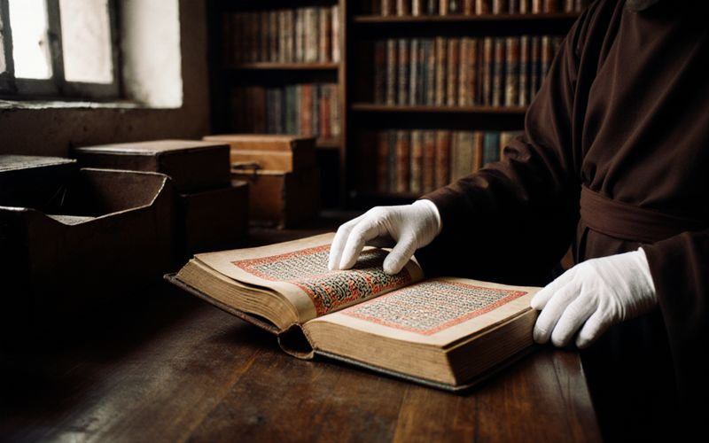

The Syro-Iradi Catholic Church
The Syro-Iradi Catholic Church is a self-governing Eastern Catholic Church in full communion with the Bishop of Rome. It grew from the Church of the East in the time of the Qara Khitai, kept its faith through persecution and through the hidden years of the Soviet period, and entered into union with Rome on 14 September 1931 by the bull Orientalis Stella of Pope Pius XI, negotiated by Mar Timotheos Alimbekov. The Church counts about 3.4 million faithful.
In our own language the Church is Tarsa Chirkövü, the Church of the Tarsa, and its official name is Iradi Sir-Katolik Chirköösü. Tarsa is the old word for Christians in Central Asia, used by the Christians of the Silk Road a thousand years ago; in everyday speech our people say Tarsoo. In our hymns we are also Janyldyktar, the people of Janyl.
Archeparchy and eparchies
| See | Bishop | Covers |
|---|---|---|
| Archeparchy of Iyık Janyl | Mar Ephrem, Metropolitan Archbishop | Iyık Janyl and the valleys of the lower Naryn and the Fergana foothills; 118 parishes and mission stations, about 40 of them in the tribal regions |
| Eparchy of Talas | Mar Toma Usenov | Talas and its districts; the St. Luka Mission; St. Yuhanna’s and St. Tomas’s in Talas; St. Yusup the Worker, Semiz |
| Eparchy of Nurzhan | Mar Yakob Kim | Nurzhan and its districts; the mission of St. Yuhanna in Moscow |
| Eparchy of the Chatkal Highlands | Mar Narsai Abdykerimov | The highland parishes of the Chatkal basin on both sides of the line. The bishop lives at Iyık Janyl and visits his parishes on horseback from spring to autumn. |
The Council of Hierarchs

The Archbishop and the bishops of the eparchies form the Council of Hierarchs of the Syro-Iradi Church (Iradi Yepiskopter Kengeshi), which our people still call the Synod, after the old synods of the Church of the East. It meets twice a year in the chapter house beside the cathedral, after Easter and in September, and each session ends with a communiqué. The Council approves the liturgical texts, sets the seminary’s course, issues joint pastoral letters and proposes candidates for bishop to the Holy Father. The rector of the seminary and the superior general of the Order attend without a vote.
On Cathedral Hill
- St. Ephrem Major Seminary, in the cloister beside the cathedral, trains priests for all four eparchies. Founded as a school for clergy in the 1730s, closed in 1937, reopened in September 1994. Six years: two of philosophy and four of theology, with Classical Syriac, the East Syriac liturgy and canon law, taught in Iradi and English. Rector: Fr. Ishak Usonov.
- The Cathedral Seminary Library, founded in 1732, holds more than 600 manuscripts, among them the Talas Gospel Lectionary and the Gospels of Iyık Janyl of 1264. About 240 manuscripts can be read online. Reading room by appointment.
- The Diocesan Archives, in the vault below the chapter house, keep the parish registers from the 18th century. Families tracing their ancestors may write to the archivist.
- The Monastic Cloister, beside the cathedral, a community of contemplative monks reopened in 1993.
- The Seminary Choir, formed in 1994, about forty seminarians and lay singers, sings the Solemn Qurbana and the great feasts.
- The Pilgrimage Hostel, opened in 1999 in the old caravanserai.

Religious life
- The Order of St. Janyl the Hermit, whose brethren are recorded on the edge of the gorge below the hill from the 1730s. Men’s and women’s branches under one superior general, Rabban Sargis Moldoev; the motherhouse below Cathedral Hill and ten dependent houses, four of them on the tribal side. The Order bakes the kümöch of the archeparchy, gathers the arsha and runs about twenty rural dispensaries. Its honey and mountain herbs are sold to pilgrims at the motherhouse gate.
- The Sisters of the Cross of Irad, a nursing congregation founded in Talas by Sister Maryam Janyl and recognised by the Archbishop in 1999. Hospice and home care in Talas, and the St. Maryam Catholic Academy.

Charity
The St. Luka Community Health Mission, founded by the Eparchy of Talas in 1994, runs St. Luka Hospital and the free St. Luka Clinic in Talas and mobile clinics in the mountains. In 2023 it gave about 46,000 consultations, two fifths of them in the tribal regions. It treats everyone, of every faith, on every side.
Abroad
The first parish outside Irad, the St. Janyl Syro-Iradi Catholic Mission in Chicago, was founded in 1953. There are communities in Chicago and Houston under the local bishops, with priests sent from Iyık Janyl, and a monthly Qurbana at the mission of St. Yuhanna in Moscow.